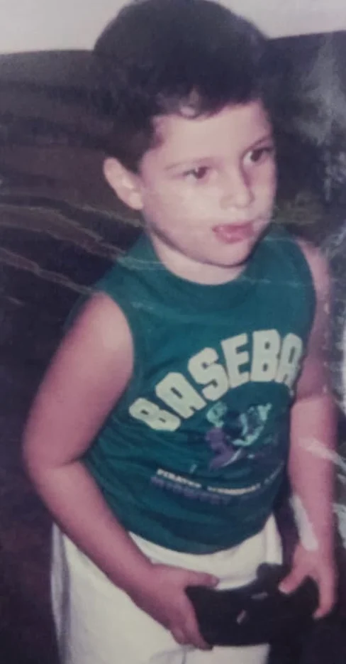

About
Hi, I'm Daniel.
Game designer and lifelong player. I design games holistically, making mechanics, lore and feel work together to deliver what the game promises.
I've loved games since I was a kid, playing Street Fighter II on a Sega Genesis and kicking the air along with Ken. I never stopped. When I'm not working, I'm playing or watching video essays and reviews, trying to understand why a game works for some players and not for others, and whether it delivers the experience it promises.
The games that marked me most pulled me into their worlds in a way others couldn't: Metroid Prime, The Witcher 3, World of Warcraft. But I also love mechanical games: fighting games, roguelikes, the Dark Souls series. I don't have a favorite genre. I have favorite games, each one delivering something no other game does.
There's no Daniel without games.

How I design
I think holistically. A design decision doesn't live alone: it ties into decisions in other areas, mechanics, lore and context, to build a reality that feels coherent. That's what I set out to do with the Demon Hunter, where mechanics, lore and context work together to add something to the whole game.
That makes my process circular rather than linear. A change in a mechanic should echo in the lore where it fits, and the lore pushes back on the mechanic. I move from branch to branch, in circles, adjusting every part until everything fits.
I believe the best games come from care, study and iteration, and that polish is what players remember.
I'd rather show an idea than describe it, so I prototype. I build those prototypes with AI-assisted development (Claude), which lets me put a playable version of a design in front of players and learn from how it feels.
Currently
- Demon Hunter for WoW: Forever (alpha) Collecting player feedback on the class and its playable stage.
- Mars Incremental Heading to Steam in Q1 2027.
- Next in the Tinker Lab A new design idea, shaped by what players say about the Demon Hunter.
Career
-
2024 to now
Co-Founder, Creative Director & Game Designer · Pixel Hound Studios
Designed the combat, bosses and enemies of Across the Abyss: Voidborn (Steam, 2024) and lead the design of Mars Incremental (Steam, 2027).
-
2022 to 2024
Senior Game Designer · Hoplon
Lead designer on five shipped mobile games, from high concept to post-launch balancing, working with publishers.
-
2020 to 2022
Game Designer · PUGA Studios
Economies, combat, content and levels for NDA-protected mobile, PC and console projects.
-
2016 to 2018
Earlier
Game design intern at PUGA Studios, where I designed Carnavalência with Brazil's Ministry of Culture; design intern at CESAR; programmer at Diorama Digital.
Awards & education
- SBGames 2022, Best Papers: 3rd place short paper in Arts & Design, on emergent behavior in Elden Ring
- GameJamPlus Recife 2019: 1st place with Statue Knight
- Bachelor's Degree in Design, CESAR School (2018 to 2022)
- Bachelor's Degree in Law, UFPE (2012 to 2017)